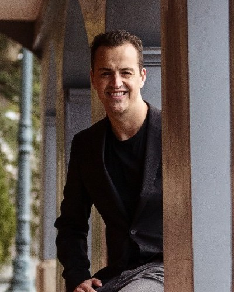

Assess
A close review of your processes and systems.
- Time with the people doing the work
- A ranked list of fixes, each with its payback
- Our recommendation for each: build it or buy it
Independent AI and systems advice for owner-run and investor-backed businesses
You’ve read what AI can do. Deciding where it fits in your business is the hard part. We help you find where it pays off and put it to work.
About Layline
Most business owners have read plenty about AI and have nobody to ask where it fits. The team is busy, the office is stretched, and every vendor has a pitch.
In sailboat racing, the layline is the course a boat sets to reach the mark with no wasted distance. You cannot sail straight into the wind, so it is the most efficient route the conditions allow, and it moves when the wind shifts. We work the same way. We learn how your business actually runs, set the most direct line to the result you want, and adjust as conditions change.
We spend time with the people doing the work, map the process and the systems behind it, and put a number on each problem. Whether the answer is a custom AI automation or advice on your systems and what the market already offers, we are your trusted advisor for all things AI in your business.
What we do
Every engagement starts with the assessment. What follows depends on what it finds.
A close review of your processes and systems.
Custom automations and integrations on top of the systems you already run.
When the answer is a new system, we help you choose it, negotiate it and hold the vendor to the plan.
Who we are
Co-founder
Johnathon co-founded Layline after a decade in management consulting and enterprise software. He began at PwC, advising Fortune 500 companies on large systems and business transformations. At Icertis, he spent five years in the sales and partner organization, helping the company grow from $75M to $400M in annual recurring revenue and putting AI to work across its sales teams. He now helps owner-run and investor-backed businesses work out where AI belongs and get it running.

Co-founder
Lucas co-founded Layline after ten years in software sales and business development, at companies including Outreach, Kevala and SS&C Blue Prism. At SS&C Blue Prism, he helped customers navigate AI automation, taking manual work off their teams and getting more from the people they have. He brings that view to every Layline engagement.
Before we meet
No. Most people come to us with a frustration: quotes that go cold, invoices that pile up, a phone that rings out. Finding and ranking the problems is what the assessment is for.
Sometimes. If your current tools can do the job, we build around them. If another system does most of it out of the box, we will say so and help you choose it.
No. Installing a new system is the vendor’s job. We help you pick it, plan it and keep it on track, and we build what it leaves uncovered.
Your team does, where it matters. Every workflow has a point where a person reviews exceptions and approves what moves forward. We design that checkpoint in from the first draft.
It stays in your systems. We agree in writing what we can access, what the automation touches and what it may never do, before anything is built.
No. The assessment is a complete engagement. Clients who stay do so for a build or for ongoing oversight.
One accountable person runs the engagement from the first conversation to handover. Specialist engineers join for the build, chosen for what your project needs. Everything built for you runs in your systems and stays yours.
We talk for about thirty minutes about how your business runs and what gets in the way. If it looks like a fit, we set up a short visit to see the work firsthand.
A short note is enough. We reply within a business day and suggest a time to talk.